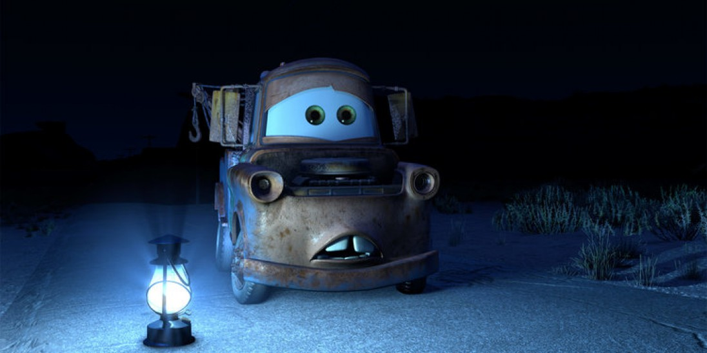

Images and Videos
Helpful Info
All images and videos must have the alt property with a description of the content represented. Alt text is necessary because it will allow screen-readers to present the information for users that have trouble with sight. Media with audio should have a transcript. Text in videos should meet the same contrast and size standards as the rest of the website, etc.
Another helpful tip for images and videos is that setting the width and height can keep the page from moving pieces around as they load. If the height and width are set in the code, the page allocates the space automatically instead of doing it when the media is loaded.
Example:

For a transcript of the video, please visit this link